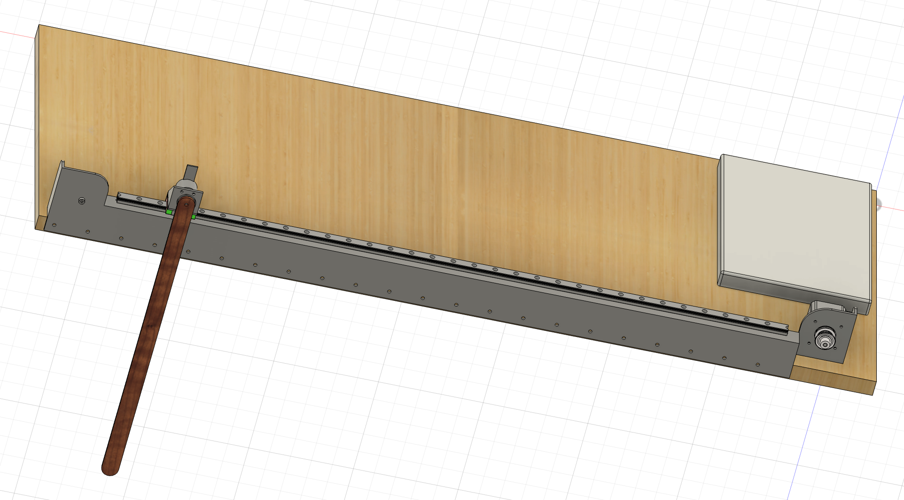
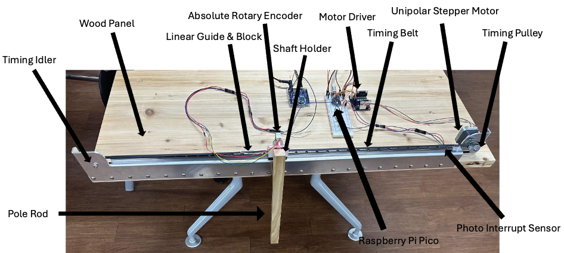
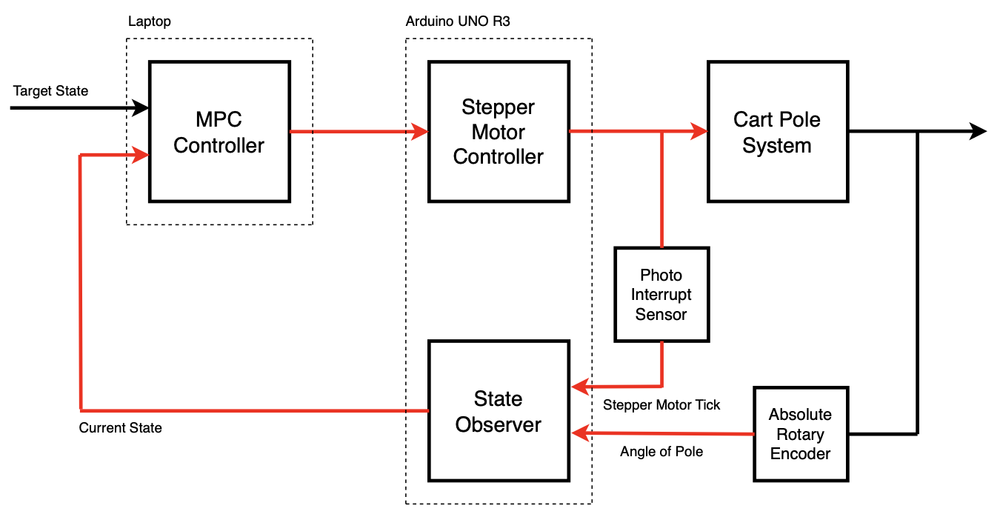
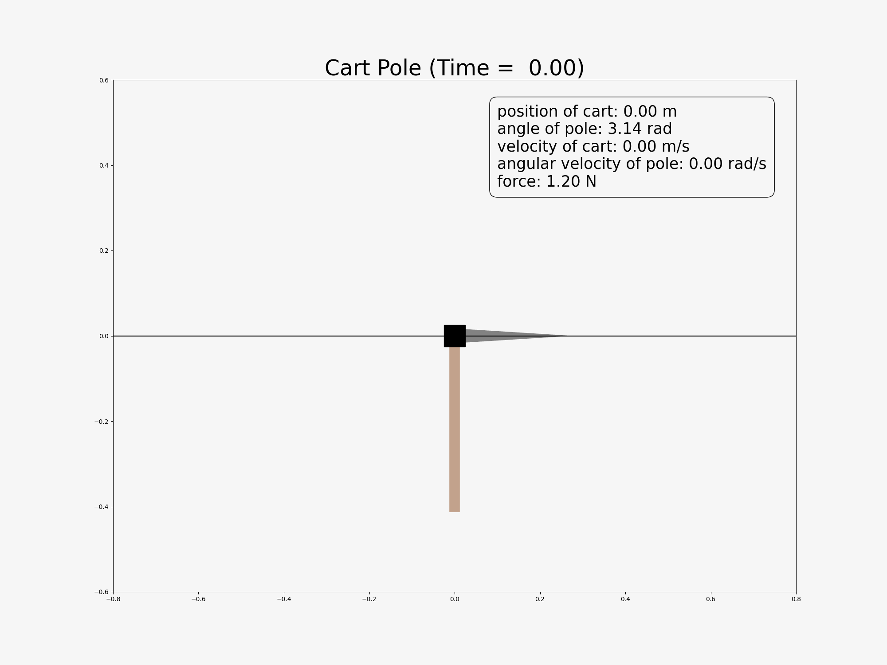

Introduction
I made a physical Cart-Pole (Inverted Pendulum) system with just 272 USD and applied nonlinear model predictive control (in simulation) as well as PID control (on the physical system)!
The Cart-Pole, a classic benchmark problem in control, consists of a cart driven by a linear actuator and a pole attached via an unactuated joint. If the pole is positioned vertically, its dynamics predict it will fall due to instability. The goal of the controller is to swing the pole up and balance it above the cart. The model and controller of the inverted pendulum are foundational for many systems, including humanoid robots and SpaceX's Starship.
The process of my project can be divided into the following steps:
1. Mechanical Design: 3D modeling using Fusion 360 to design the physical structure of the system
2. Electronics: Select specifications for sensors, actuators, processors, and other components
3. Motor Control: Acceleration-based control of the stepper motor
4. Hardware Fabrication
5. Feedback (Closed) Loop: Measure real-time defined states through actuators and sensors, or estimate them using a state observer
6. Simulation Environment: Set up a simulation environment in Python to validate control strategies for the Cart-Pole system
7. Control: Formulate mathematical models and optimization problems for Model Predictive Control (MPC)
I won the Popular Prize at the UOS ECE Innovation Fair and presented my project to the Department of Mathematics, thanks to Professor Dohyeon Kwon’s invitation, focusing on differential equations and mathematical optimization. I received valuable advice from undergraduate students in mechanical, electrical, and computer engineering. All of it was truly enjoyable.
Mechanical Design and Electronics
3D Modeling
Physical Speficiation
- Stepper Motor: 27,000 KRW ($18.25 USD)
- Stepper Motor Driver: 25,000 KRW ($16.91 USD)
- Absolute Rotary Encoder: 75,000 KRW ($50.75 USD)
- Photo Interrupter Sensor (x2): 600 KRW ($0.41 USD)
- Raspberry Pi Pico 1: 6,400 KRW ($4.32 USD)
- Cedar Wooden Plank: 28,000 KRW ($18.96 USD)
- Wooden Rod: 2,800 KRW ($1.89 USD)
- Linear Guide: 45,913 KRW ($30.97 USD)
- Shaft Holder: 7,260 KRW ($4.91 USD)
- Timing Pulley: 1,500 KRW ($1.01 USD)
- Timing Idler: 900 KRW ($0.61 USD)
- Timing Belt: 1,412 KRW ($0.95 USD)
- Sheet Metal (Aluminum): 130,000 KRW ($87.81 USD)
- Wires, screws, and other consumables: 50,000 KRW ($33.84 USD)
Total: 401,785 won (271.66 USD)
- mass of cart : 0.123 kg (122.61g)
- length of cart : 0.045m (4.5cm)
- mass of pole : 0.089 kg (88.68g)
- length of pole : 0.4m (40cm)
- inertia of pole : 0.004 746 kg m^2
- length of rail (linear guide) : 0.72m (72cm)
- maximum magnitude of force : 1.2 N
System Architecture
Motor Controller, State Observer, and MPC
Experiment
Simulation Result

Physical Result
Reference
Nonlinear Model Predictive Control of an Inverted Pendulum
Project
PID is All You Need: Cart Pole System Design and Control with NMPC and PID
- Project Duration: 07/25/2024-09/27/2024
- Populatity Prize at UOS ECE IF (Innovation Fair) Competition held by department of electrical and computer engineering school
- Team Member: Sewon Kim
Competition
- Target participants: Undergraduate students in the Department of Electrical and Computer Engineering
- Exhibition of project outcomes developed through the application of major coursework knowledge and personal initiative
- Only projects created by undergraduate students using their knowledge and efforts are eligible for submission
- Material costs of up to 500,000 KRW per team are covered (personal expenses are not permitted)
Poster